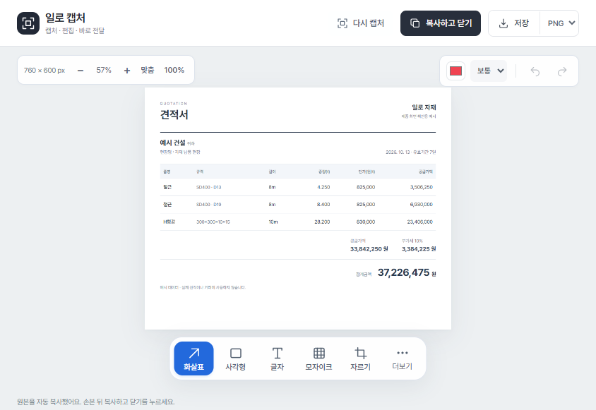

견적부터 전달까지
일을 더 가볍게.
일로.
자료를 견적으로, 화면을 메시지로.
자주 하는 일을 한곳에서 이어가세요.
Windows 10 · 11 / 64비트 · v0.23.35
일로 견적
사진·엑셀을 읽고,
견적 초안을 만들어요.
규격과 수량을 확인하고 단가를 넣으면
견적서·거래명세서·발주서로 이어져요.
AI 초안은 원문과 대조한 뒤 적용하세요.
견적서 예시 자재
수신 예시 건설 귀하
현장명 : 신축 현장
철근 SD400 D138 m100본
H형강 300×30010 m30본
전체 이미지 복사PDF 저장

일로 캡처
누르고, 손보고,
붙여넣으세요.
작업표시줄에서 바로 캡처.
화살표·글자·모자이크로 정리해서
메신저에 붙여넣으세요.
시작은 간단하게.
- 1일로를 설치하세요.
설치파일 하나를 실행하면 됩니다.
- 2AI 기능을 준비하세요.
첫 실행에서 필요한 환경을 자동으로 준비해요.
인터넷 연결과 몇 분의 준비 시간이 필요합니다. - 3ChatGPT 계정으로 연결하세요.
AI를 쓰려면 지원되는 ChatGPT 계정과 구독 사용 동의가 필요해요.
사용량은 연결한 계정의 한도에 포함됩니다.
새 버전은 앱에서 자동 확인해요. 안내가 뜨면 저장 후 업데이트하세요.
휴대폰 연결은 PC 일로가 실행 중이고 같은 Wi-Fi 또는 Tailscale로 연결되어 있어야 해요.
설치 전 참고
현재 설치파일은 Windows 게시자 인증서로 서명되지 않았습니다. 배포자와 다운로드 주소를 확인하고 회사 PC에서는 담당자에게 설치 정책을 확인하세요. 앱의 업데이트는 배포자 서명과 파일 검증 후 설치합니다.
견적·설정·AI 대화는 PC에 보관됩니다. AI를 요청하면 선택한 자료와 필요한 업무 내용을 ChatGPT로 전송합니다. 이 다운로드에는 제작자의 업무 자료나 로그인 정보가 들어 있지 않습니다.